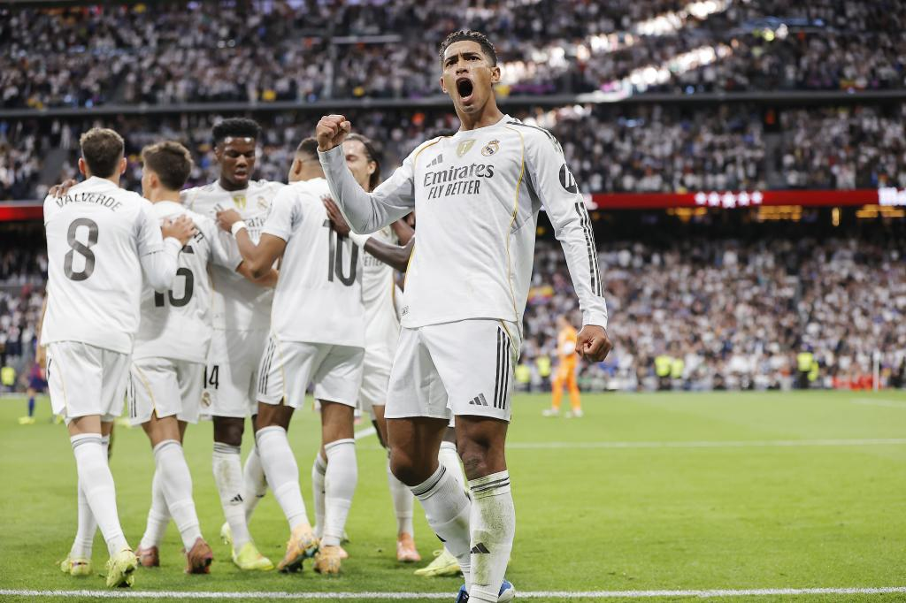
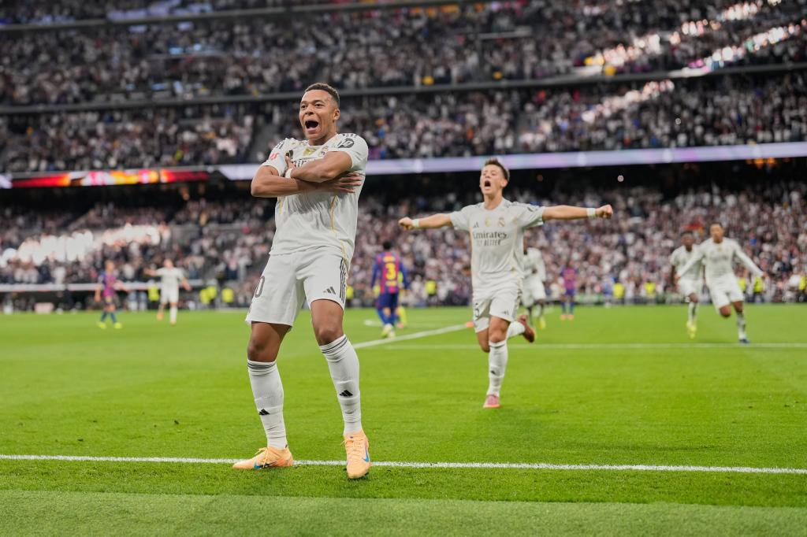
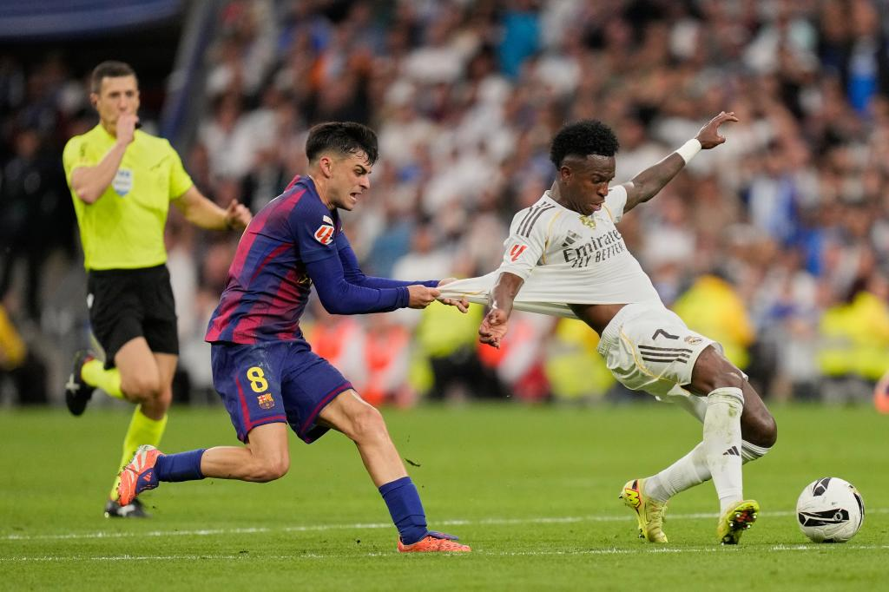
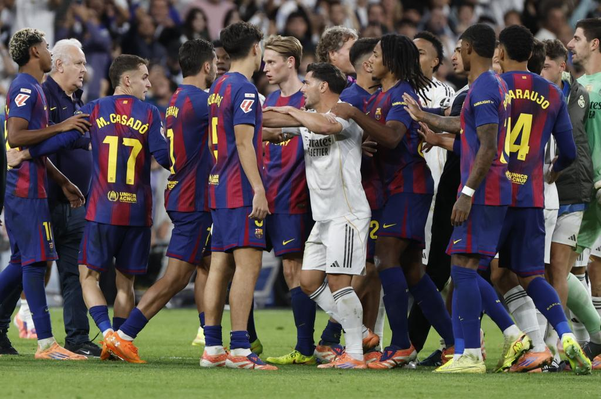

🇪🇸⚔️ Madrid y Barça: más que un partido, una batalla de ideales ⚽🔥
📸 Foto: Federación Colombiana de Fútbol
Los Clásicos son conocidos como la disputa mayor de la élite del fútbol, especialmente entre estos dos equipos que son de los más grandes de la historia. Unos por sus títulos, otros por la historia que cargan y por la fanaticada que los acompaña, no solo en España, sino en miles de países del mundo. Más que ver un partido, los hinchas presencian una lucha entre dos ideales del fútbol.
Días antes del encuentro surgió una polémica por la actuación de Lamine Yamal en la Kings League, programa del creador de contenido Ibai Llanos y el exjugador del Barça Gerard Piqué. En él, Yamal hizo un comentario que, aunque buscaba ser un chiste dentro del tono del programa, fue tomado a mal por jugadores y aficionados del Real Madrid, generando una fuerte ola de críticas hacia el joven jugador en redes sociales.

📸 Fuente: FIFA
Este tipo de frases no se pueden decir en un programa tan reconocido mundialmente. Más allá de una broma, terminan siendo una falta de respeto hacia un club, sus jugadores, su cuerpo técnico y toda una institución. No sirve la excusa de “es solo un niño”, porque Yamal entiende que es una figura pública y debe cuidar sus palabras frente a las cámaras. Ser figura pública implica responsabilidad.
Llegamos al domingo 26 de octubre, día del Clásico. Normalmente, estos partidos son intensos y llenos de tensión, pero este tuvo varias polémicas que no me gustaron. El Madrid, dirigido por Xabi Alonso, salió con un 4-4-2, mientras que el Barça de Hansi Flick usó un 4-3-3. Para mí, la decisión táctica de Alonso fue acertada.
En cuanto al rendimiento, Kylian Mbappé estuvo impresionante. Como delantero centro mantiene una racha goleadora brutal y una capacidad increíble para generar peligro. Aun con algunos fueras de juego, su nivel ofensivo fue sobresaliente. Jude Bellingham también demostró su peso en el equipo, con una asistencia y un gol, aunque personalmente no me gustó su actitud durante el encuentro.
📸 Fuente: FIFA
Vinícius jugó más como extremo creativo, asistiendo a Militao para el gol de Bellingham. Sin embargo, me habría gustado verlo más ofensivo, buscando diagonales y remates, no tanto centrando desde la línea. Tchouaméni y Militao, para mí, fueron determinantes para Madrid: el primero dominó el mediocampo con muchas recuperaciones, y el segundo fue un muro en defensa, obligando al Barça a atacar por las bandas ante la imposibilidad de avanzar por el centro.
El Barça llegaba con varias bajas, además de la ausencia de su técnico por expulsión en liga. La primera parte fue floja ofensivamente: no lograban pisar área rival, y las contras se ejecutaban mal. Flick no utilizó la defensa adelantada que le había funcionado en clásicos anteriores, y cuando intentó hacerlo, llegó el primer gol del Madrid: pase de Jude al espacio y Mbappé aprovechó la velocidad ante un Pau Cubarsí que se confió en el fuera de juego. Para el segundo gol, nuevamente, fue error de marcaje: Bellingham entró solo al área chica y definió sin marca.

📸 Fuente: FIFA
El mediocampo del Barça me gustó bastante. Frenkie de Jong distribuyó muy bien el balón y mantuvo equilibrio entre defensa y ataque. Fermín López, aunque tuvo un buen primer tiempo, desaprovechó una gran oportunidad de empate en la segunda parte al decidir mal la jugada.Pedri, aunque no tuvo su mejor día, fue inteligente. En una jugada de contragolpe del Madrid, hizo una falta táctica a Vinícius para frenar una ocasión clara. Fue amonestado, pero evitó el gol. Sin embargo, más tarde esa decisión le costó la expulsión por doble amarilla tras una falta sobre Tchouaméni.
📸 Fuente: FIFA
En ataque, el equipo se vio débil. Ferran Torres fue anulado por Militao, Marcus Rashford no terminó de conectarse con sus compañeros, y Lamine Yamal, el más esperado, desapareció. Justamente él, que días antes había hablado tanto, no pudo brillar en un partido clave para definir la liga. Cualquiera puede tener un mal partido, pero si hablas de más, la presión puede pasarte factura.
Defensivamente, Eric García estuvo sólido, recordando a Íñigo Martínez. Cubarsí mejoró muchísimo en la segunda parte, y Balde fue veloz, aunque no se entendió bien con Rashford. Koundé cumplió, pero su conexión con Yamal no fue la mejor, a pesar de su buena química habitual.
La segunda parte del Barça me gustó mucho más: mejoró en defensa y ataque, tuvo varias oportunidades claras de empate y obligó al Madrid a replegarse y bajar la intensidad.
El final del partido se descontroló. Hubo discusiones, egos y actitudes inmaduras. Jude Bellingham, pese a su gran actuación, habló sobre el “caso Negreira” y encendió más el ambiente. Vinícius, por su parte, mostró una actitud infantil tras su cambio, yéndose a los camerinos y regresando solo para discutir con Yamal. Para mí, el Madrid habría quedado más respetado si se mantenía en silencio y dejaba que la prensa hablara por ellos.
📸 Fuente: FIFA
También está el caso de Dani Carvajal, capitán de la selección española, quien discutió con Yamal diciéndole: “A ver si sigues hablando.” Ese momento desató el caos final, y se rumorea que podría afectar sus futuras convocatorias, lo cual me parece totalmente innecesario.
Ambos equipos mostraron un buen nivel, pero el Madrid supo manejar mejor el encuentro y eso se reflejó en el marcador. Fue un buen Clásico, con polémicas innecesarias pero con gran calidad futbolística. Ahora el Barça queda segundo, a cinco puntos del Madrid. Solo queda esperar cómo se desarrolla la liga para estos dos gigantes del fútbol mundial.